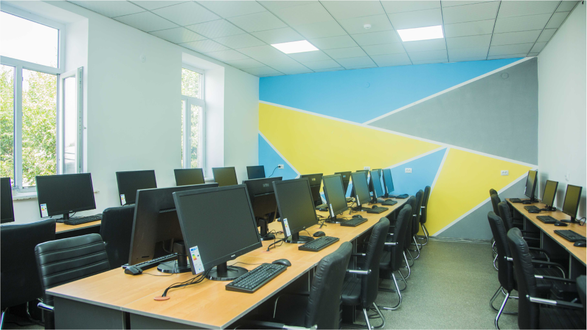
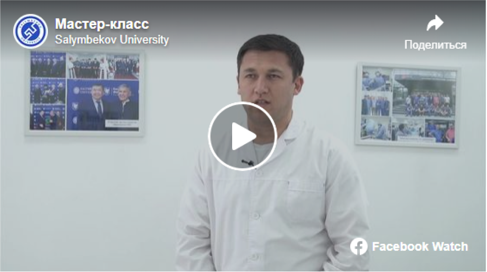

university
Founded in 2019, the Salymbekov University Institution is a direct continuation of the previously launched educational projects of the Askar Salymbekov Foundation, founded in 2012, which identified the most important areas for stimulating the development of human resources, education, science and the formation of a new generation of enlightened youth. The Foundation has implemented many large projects related to the education of schoolchildren and students, the publication of books, seminars, round tables, forums and other platforms for various companies, organizations and educational institutions, as well as events with the participation of international lecturers. All these projects allowed to educate and enlighten more than 25 thousand people.
The founder of the Public Foundation “Askar Salymbekov Foundation” Salymbekov Askar Maatkabylovich with graduates of the “Young Leaders of Kyrgyzstan”
University
So in 2014, the Foundation launched a successful educational project for young people - the Public School "Young Leaders of Kyrgyzstan", which had a huge positive effect on the new generation. Her unique, unparalleled, comprehensive training and motivational courses have given students and young people the opportunity to master the so-called "Soft Skills", new knowledge and skills for personal growth and the formation of leadership qualities. Despite the fact that this school was conceived as a platform for training only 100 people, its work did not stop there. Numerous positive reviews and requests became the reason for the continuation of this initiative, and subsequent enrollments to this school began.

Successful experience with a public school for students and youth, as well as feedback and appeals from the population, became the impetus for launching similar educational projects for other age groups. Thus, in 2016, for high school students of secondary schools, the Young Leaders of Kyrgyzstan Public School, adapted for them, was launched, in which about 800 high school students completed their studies. Since 2017, an educational project called the Public School "Future Leaders of Kyrgyzstan" has been launched for students of middle and lower grades, the total number of graduates of this school is about 450 people. Children were not left without attention either; in 2018, an educational project for preschool children “Smartik” was launched especially for them.
An important step in our development was 2017, when all of the above projects were combined into one project, namely the Business School "Salymbekov Business School", whose activities were focused on such 5 areas as the "School of Leadership" (covering educational projects for all ages groups), "School of Business and Management", "STEM School", "Language School" and "Schools of Intensive Development". At the same time, special attention was paid to the promotion and popularization of the English language in the Kyrgyz Republic, where, through the implementation of key projects and initiatives, the process of developing a multilingual education system was launched. Positive feedback and words of gratitude from the capital's schoolchildren and students, one-time educational events in regional centers caused a wave of requests from residents of the country's regions, who asked them to open similar schools. On the basis of this, the process of Scaling the Salymbekov Business School on the principles of social entrepreneurship was launched, i.e., an educational project with a socio-economic orientation was implemented. Branches of the Business School were opened in the cities of Jalal-Abad, Osh, Batken, Karakol, Talas Naryn, Balykchy and in the villages of At-Bashy and Novo-Pokrovka. These branches, as well as the head school in Bishkek, are focused on educating and shaping a new generation of educated, independent and responsible youth and future leaders. Within the framework of these public schools, additional modern education is provided,

Thanks to the successful experience and practice in the implementation of educational programs and projects, as well as due to the urgent need to introduce modern methods and programs for the training of highly qualified and sought-after personnel, it was decided to establish a new educational institution, the Salymbekov University Institution. One of these first areas of our University is the Faculty of Medicine, where the training of highly qualified medical personnel in demand in our country and abroad will be carried out according to international standards. The use of effective teaching methods and modern educational programs ensures the high competitiveness of our graduates both in the domestic and foreign labor markets, and also allows them to successfully carry out their labor activities in the international arena. Our University trains medical personnel according to international standards with the teaching process in English. Priority goals of our University IT-sphere business management Agriculture Vocational education Medical education
Our strategy considers training in the medical direction of citizens:
KYRGYZSTAN, NEAR ABROAD COUNTRIES, FAR ABROAD COUNTRIES